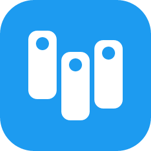
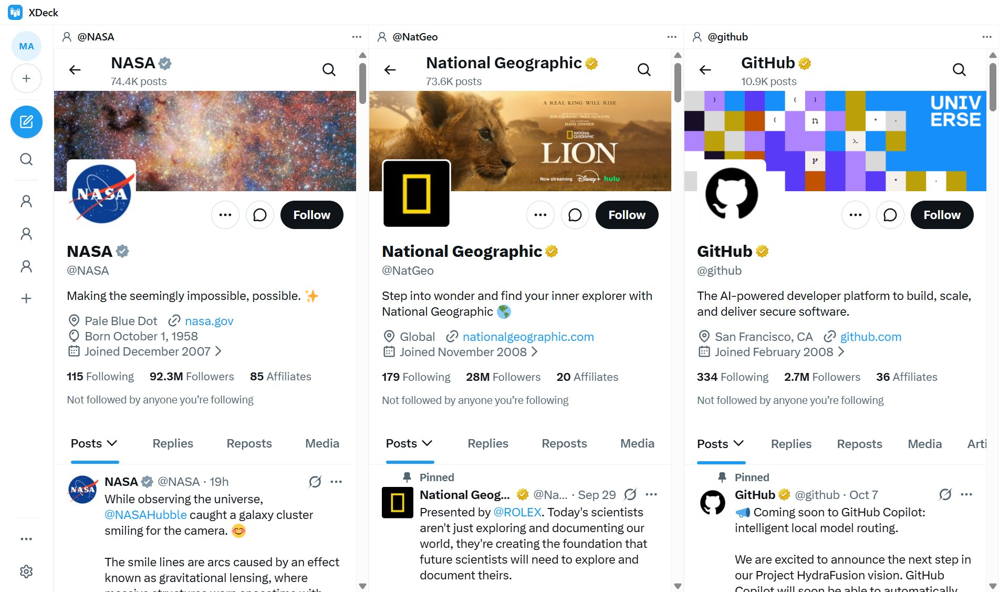

macOS・Windows・Linux 対応
タイムラインのすべてを、
ひとつのウィンドウに。
XDeck は、マルチカラムのデッキを取り戻すアプリです。𝕏・Instagram・Facebook を横に並べて、 タイムライン・通知・リスト・検索・グループを 同時に表示。

XDeckXDeck は、マルチカラムのデッキを取り戻すアプリです。𝕏・Instagram・Facebook を横に並べて、 タイムライン・通知・リスト・検索・グループを 同時に表示。

𝕏・Instagram・Facebook のカラムを自由な順番で。各サイトはそのまま表示し、上部のバーは隠します。ナビゲーションは左のバーから。
各サービスでアカウントをいくつでも追加でき、それぞれ独立したセッションで動きます。どのアカウントのカラムかはヘッダーに表示されます。
仕事・ニュース・友だちなど、カラムのセットを分けて左のバーからワンクリックで切り替え。読み込まれるのは開いているデッキだけです。
どのアカウントからでも投稿できます。𝕏 のエディター、または Instagram・Facebook 自身の新規投稿ウィンドウをカラムの上に開きます。
ミュートワード、リポストやリールの非表示、写真・動画付きの投稿だけの表示を、カラムごとに設定できます。
XDeck がバックグラウンドにあるあいだに通知が増えると、デスクトップ通知と未読バッジでお知らせします。
左のバーからカラムを追加し（⌘T / Ctrl+T）、ドラッグで並べ替え、端をドラッグして幅を変更できます。3 つのサイトのどのページも、ほかの Web ページもカラムにできます。
設定はすべて ~/.config/XDeck の settings.json に保存されるので、デッキを手で書くこともできます。
{ "$schema": "./schema.json", "columnWidth": 380, "decks": [ { "name": "Main", "columns": [ { "type": "following" }, { "type": "notifications" }, { "type": "custom", "url": "https://www.instagram.com/", "filters": { "hideReels": true } } ] }, { "name": "News", "columns": [ { "type": "custom", "url": "https://x.com/i/lists/123456789" } ] } ] }